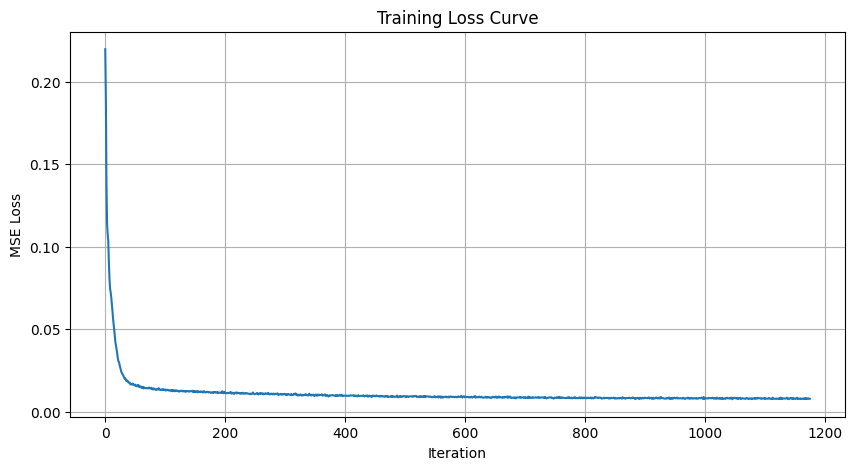
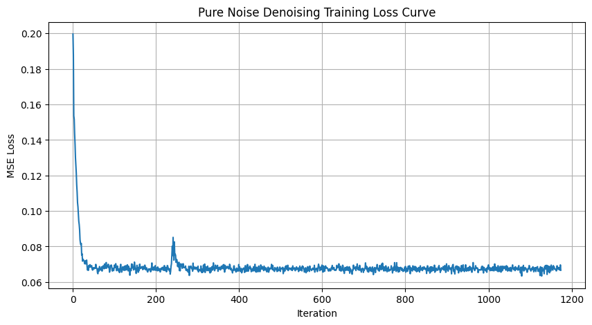
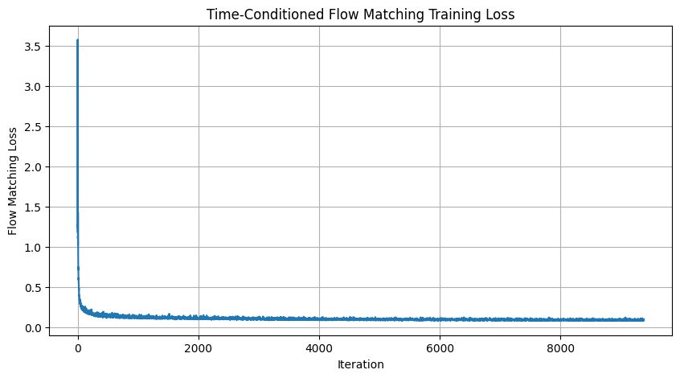
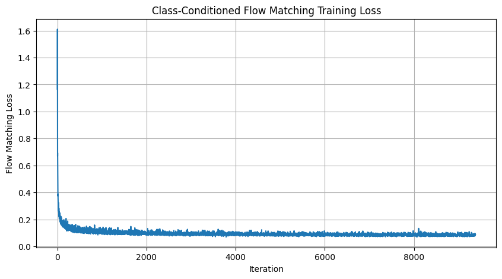
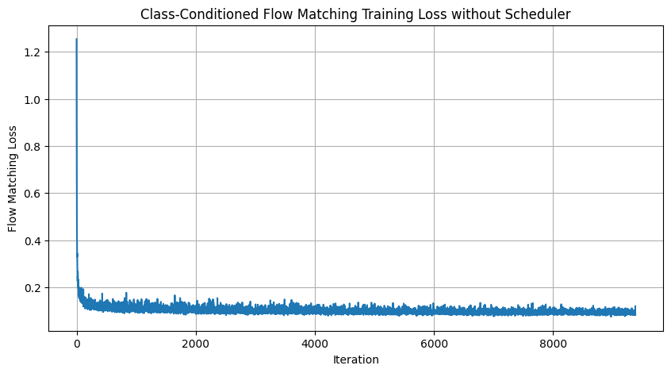

Project 5A: The Power of Diffusion Models
Exploring DeepFloyd IF for Image Generation and Manipulation
Part 0: Setup and Text-to-Image Generation
In this part, we set up the DeepFloyd IF diffusion model and generate images from text prompts.
Part 0.1: Model Setup and Prompt Embeddings
We created a Hugging Face account, accepted the DeepFloyd license, and generated prompt embeddings for custom text prompts.
Part 0.2: Text-to-Image Results
Generated images using custom text prompts with different inference steps:
prompts:
prompt1:A chicken and a monkey hybrid
prompt2:A river flowing with liquid starlight through a dark forest
prompt3:A dragon made of crystal and light, sleeping on a mountain of gems
prompt4:explosion in the water
prompt5:A book made of bugs
Below I will show generated image of each prompt with 20 and 80 inference steps.

Random Seed
Used seed: 100 (used consistently throughout all experiments)
Part 1: Sampling Loops and Diffusion Techniques
Part 1.1: Forward Process Implementation
Implemented the forward process to add noise to images at different timesteps.

Part 1.2: Classical Denoising with Gaussian Blur
Applied Gaussian blur filtering to denoise the noisy Campanile images.
Part 1.3: One-Step Denoising with Diffusion Model
Used the pretrained UNet to perform one-step denoising on noisy images.
Part 1.4: Iterative Denoising
Implemented iterative denoising with strided timesteps for more efficient sampling.
Part 1.5: Diffusion Model Sampling
Generated images from pure noise using the diffusion model.

Part 1.6: Classifier-Free Guidance (CFG)
Implemented CFG to improve image quality by combining conditional and unconditional noise estimates.

Part 1.7: Image-to-Image Translation
Part 1.7.1: SDEdit on Campanile
Applied SDEdit at different noise levels to create edits of the Campanile image.


Part 1.7.2: Web and Hand-Drawn Images
Applied SDEdit to web images and hand-drawn sketches.
Part 1.7.3: Inpainting
Implemented inpainting by combining known regions with diffusion-generated content.


Part 1.7.4: Text-Conditional Image-to-Image
Applied text-guided image editing to transform images based on prompts.


Part 1.8: Visual Anagrams
Created optical illusions that change appearance when flipped upside down.
Part 1.9: Hybrid Images
Created hybrid images by combining low and high frequencies from different prompts.
Conclusion
This project explored the capabilities of diffusion models through various applications:
- Text-to-image generation using DeepFloyd IF produces diverse and creative outputs
- Iterative denoising enables high-quality image reconstruction from noisy inputs
- Classifier-free guidance significantly improves output quality and alignment with prompts
- Image editing techniques like SDEdit, inpainting, and text-guided translation provide powerful creative tools
- Optical illusions through visual anagrams and hybrid images demonstrate the flexibility of diffusion models
Diffusion models represent a powerful paradigm for generative AI with applications across creative domains.
Project 5B: Flow Matching from Scratch
Training flow matching models on MNIST from scratch
Part 1: Training a Single-Step Denoising UNet
Part 1.1: Implementing the UNet
Implemented the UNet architecture with downsampling and upsampling blocks with skip connections.
Part 1.2: Using the UNet to Train a Denoiser
Noising Process Visualization
Visualization of the noising process with different σ values:
Part 1.2.1: Training Results
Training loss curve over 5 epochs:
Sample denoising results on test set (σ = 0.5):
Part 1.2.2: Out-of-Distribution Testing
Denoiser performance on varying noise levels σ:
Part 1.2.3: Denoising Pure Noise
Training loss curve for pure noise denoising:
Denoising results on pure noise:

Analysis
The pure noise denoising outputs show that the model learns to predict the average of the training distribution. The patterns observed are blurry, indistinct shapes that resemble an average of all MNIST digits rather than specific digits. This happens because when the model is trained on pure noise with an L2 loss, it learns to predict the mean of the training distribution that minimizes the squared error. Since it's trained on noise without any conditioning, it produces what looks like a "centroid" of all digits rather than generating specific digit classes.
Part 2: Training a Flow Matching Model
Part 2.1-2.2: Time-Conditioned UNet Training
Training loss curve for time-conditioned UNet:
Part 2.3: Sampling from Time-Conditioned UNet
Sampling results after different epochs:
Part 2.4-2.5: Class-Conditioned UNet Training
Training loss curve for class-conditioned UNet:
Part 2.6: Sampling from Class-Conditioned UNet
Sampling results with classifier-free guidance (w = 3.0):
Learning Rate Scheduler Ablation
To evaluate the necessity of the exponential learning rate scheduler, I conducted a controlled experiment comparing two training strategies for the class-conditional UNet:
Strategy 1: With Exponential LR Scheduler
- Initial Learning Rate: 1e-2 (higher initial rate)
- Scheduler: StepLR with step_size=5, gamma=0.5 (halves learning rate every 5 epochs)
- Regularization: None explicitly applied
- Gradient Handling: No gradient clipping
Strategy 2: Without Scheduler (Modified Approach)
- Initial Learning Rate: 1e-3 (10x lower than Strategy 1)
- Scheduler: None (constant learning rate throughout training)
- Regularization: Added weight decay of 2e-4 to prevent overfitting
- Gradient Handling: Applied gradient clipping with max_norm=1.0 for stability
- Training Extension: Increased training to 8 epochs (vs 5 in scheduler approach) for better convergence
Key Findings & Analysis:
The modified approach without a scheduler achieved comparable performance through several compensatory strategies:
- Lower Initial Learning Rate: Starting at 1e-3 instead of 1e-2 provided more stable training from the beginning, preventing the large fluctuations that typically require a scheduler to manage.
- Regularization Techniques: The addition of weight decay (2e-4) helped prevent overfitting and stabilized the training process without needing learning rate adjustments.
- Gradient Clipping: By limiting gradient norms to 1.0, I prevented explosive gradient updates that often necessitate learning rate reduction through schedulers.
- Extended Training: The model was trained for 8 epochs instead of 5, allowing it to converge more gradually to a similar final loss value.
The results show that while the scheduler-based approach converges faster initially, the modified constant-LR strategy can achieve similar final performance through careful hyperparameter tuning and regularization. This demonstrates that learning rate schedulers are not strictly necessary but rather provide a convenient way to manage training dynamics that can also be achieved through other means.
Part B Conclusion
In this part, we implemented and trained flow matching models from scratch. Key findings:
- Single-step denoising UNet works well for in-distribution noise levels but struggles with out-of-distribution noise
- Pure noise denoising produces [YOUR FINDINGS]
- Time-conditioned flow matching enables iterative denoising for generation
- Class-conditioning improves control and convergence speed
- Classifier-free guidance enhances output quality and class alignment